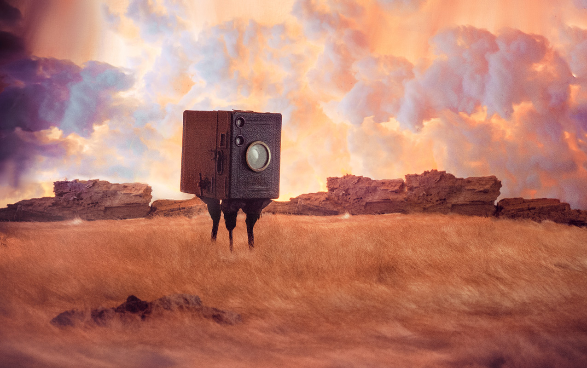

-
the Heartmill Lands
miniature sets, photographed
Playfully, objects are arranged and photographed to form miniature dioramas. A crossover between model making for stage / movie scenery and fine art. NO AI USED.
'The Heartmill Land' represents surreal spaces within a fictional world. It contains places of dreams, fears, discovery, magic, mystery - and depicts atmospheric landscape with beauty, darkness and curiousity.
Main project
2015 - ongoing
The portal of life
- 
The explorer
The heartmill
The church of the smiling god
The halloween tree
The forbidden glowcloud factory
in the ice age cave
Baba Yaga's hut
Hall of the mountain king
The nightmare creator
The disease factory behind the border

The surveillance factory
The basilisk's hall of transience

The annual meet-up ball (since 1856)
The Genesis laboratory
The desert train
Robinson's rescue beach
The encounter
a stormy night